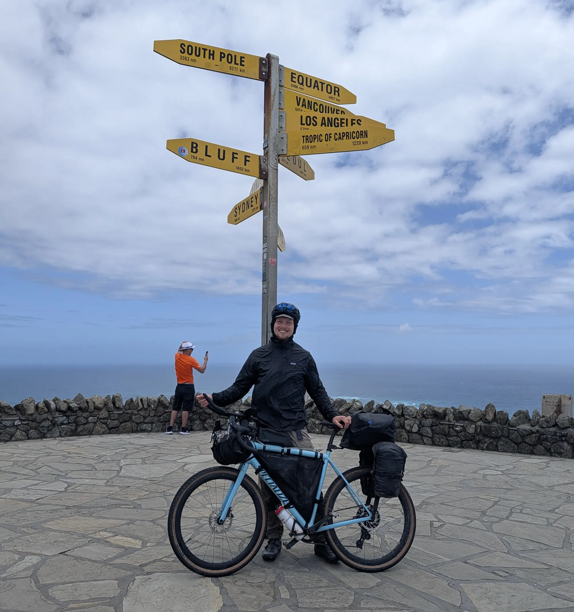

Today I started the Tour Aotearoa, the 3,000km (1,800-mile) cycling route linking the northernmost point of New Zealand with its southernmost point.
To get there has taken about 19 days and has come with a bit of its own crazy story, which will be added retroactively. But to summarize, in those 19 days, I have traveled from Christchurch, which is about 2/3rds of the way up the South Island, all the way to the tippy top of the north. To do this, I first cycled from Christchurch to Picton via the Sounds To Sounds route, another long-distance trail connecting the Queen Charlotte in the north to the Milford Sound in the south. From Picton, I took a ferry to Wellington and stayed a few days, seeing the town. The ultimate goal, however, was to get to the start of the Tour - no easy feat. In the end, I opted to take a car and drove (on the wrong side of the road) from Wellington to Auckland. From Auckland, I took a bus to a town called Kaitaia, then cycled the 100ish km (during which I waited out a storm that brought ~4.7 inches of rain) to the Cape Reinga lighthouse and the start of the trail. There are, of course, many parts of this story that have been grossly summarized here, but to get something out, I have chosen to skip them in favor of writing about this new natural starting place, with the intention to fill them in later.
So, cut to the tip of the north island, nearing the beginning of the journey.

The journey to get here, as alluded to, had been long and circuitous. It had also been hard in a way I was not expecting. The loneliness of an open road, with only a little bit of a plan, was starting to get to me.
In parts, I met few people on bikes, and those I did meet were generally headed southbound. We would stop briefly to chat - each of them possessing a wonderful, unique story, which I briefly had a chance to be a character in. We would exchange where we were from, some fact about the upcoming climb, and then we would each crack on with our own direction1.
Getting up to the northern end of New Zealand from Christchurch, about 2/3rds up the southern island, was also exhausting in a way I was not expecting. Of course, pedaling a bike for days on end is bound to be tiring, and it was. But it was the logistics that started to get to me.
It was the same feeling of choice paralysis you have when going to the grocery store in a new city to buy the evening meal. In these situations, I find myself just slightly thrown off my routine in the new store - why are the tortillas here?! - and then slightly off again when I return to as-yet-unknown-to-me kitchen at the AirB&B. It’s never very hard - there is never a moment where something will go catastrophically wrong requiring sudden and intense concentration - rather it’s just wearing. Each decision - should I go down aisle 11 to find the tortillas with the baked foods? - has to be considered because they are all new. Back home, by contrast, I know where the tortillas are - aisle 7, at the end - and when I need tortillas, I bee-line right there, free to make other more interesting decisions. In the new city, by the time I return to that AirB&B, whose kitchen layout I am about to learn by opening every drawer twice, looking for a spoon, the excitement that buoyed the meal at first has been largely used up, and what remains is the determined resignation of finishing.
Finding my way north to Cape Reinga from way down south at Christchurch - figuring out how, exactly, I was going to string together a series of cities and transit options in the cheapest and quickest way, while being vigilant to potential bike theft - was not clear or straightforward. Each decision was new, and there were many unknowns.
Looking back, I am shocked I managed it. But the resignation of being on the path - momentum - kept me going. And that momentum delivered me, somehow, to the start of the trail.
The lighthouse itself is hidden from the view of the parking lot. The paved walkway teases you with false rises before finally revealing the lighthouse itself. The sea clashes against the rocks some 250 feet below. The end of the islands are volcanic in origin and retain basalt's tendency to be prominent and vertical.

I walked down the path with my bike, holding the brakes nearly closed as the path steepened. Admiring the view and awaiting the lighthouse to come into view.

The lighthouse at Cape Reinga is not a beautiful or elegant thing, at least in the conventional sense. It is a squat reinforced octagon made of concrete slabs. It stands about 30 feet high, with the bluff below providing most of its prominence. The light is housed in a circular, dark-metal, almost-birdcage with glass panes, under a black-metal dome. What elegance the structure does have comes as a byproduct of its solidity in such a windswept environment.
Next to the lighthouse is a post holding yellow signs pointing to other places around the world. Bluff, my eventual end, 748 nautical miles. The South Pole, 3,383 nautical miles. Los Angeles, 5,700 nautical miles. Vancouver 6,059 NM. Even at my closest point to home, the signs remind me just how far away I am.

I took it all in for a moment longer - this most-northern point - before walking my bike pack up the path to the road.
And that was the start. There was nothing ceremonious or particularly ritualistic about the moment. Just a look back, an acknowledgement of the next phase of this journey, before continuing.
At the road, at the top of the path, much to my delight, there were two bikepackers setting up their gear under the pavilion. I stopped to say hi. They were a couple, English, living in Queenstown in the south. They were about to move back to the UK, but first they wanted to do the tour - or as much of it as their time would allow. They were delightful, and I realized they would be heading in my direction. I would most likely see them again and continue our chat at a later time.
We finished our conversation, and I rolled over to another spot to load up my route map.
01 Cape Reinga to Ahipara, dist: 104.0 km elev: 181 m.
The Wahoo cyclocomputer gave a happy chirp as it acknowledged that the map was loaded. A new black line appeared on the screen. Little chevrons popped up, indicating the way to my destination.
I left the parking lot and headed toward a descent. As gravity began to take me down, I smiled, then laughed out loud. I finally had a good sense of the direction I was going and the turns I needed to take to get there.
The day was warm, and the wind was at my back. Everything, it seemed, was beginning to work out.
Footnotes:
-
There were a few exceptions. In the first, I rode with a group of just-graduated high school girls for a day from the end of the Molesworth track to near Bliemen. They were invited to do the Sounds to Sounds by a bunch of their mates, but decided to head back to Wellington about halfway through. In the second, I found myself riding with a Brit called Russell Southbound on the Queen Charlotte Track. He had ridden the tour the year before and was back to do the Sounds to Sounds southbound. He was keeping a vlog, and I appeared in two of the episodes! You can find the first of those videos here: https://youtu.be/31sKKC_eC34?si=Fs9RM1SXOPhsGraD , and here: https://youtu.be/_ExdA0ixTM0?si=E6de0YNsoUxBE4V3 . ↩︎